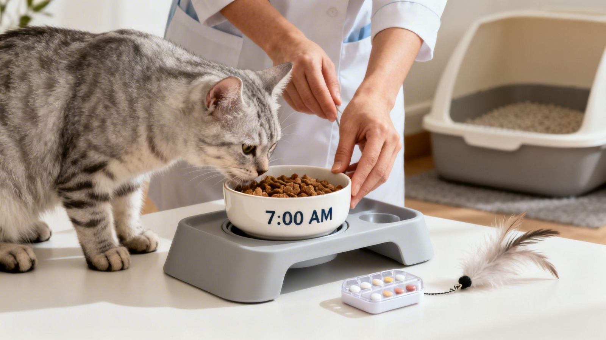
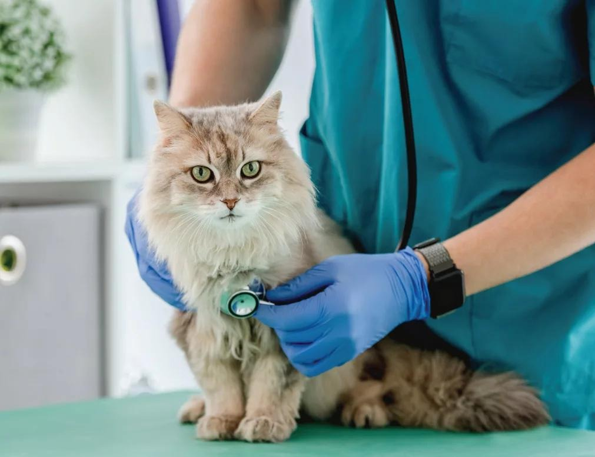
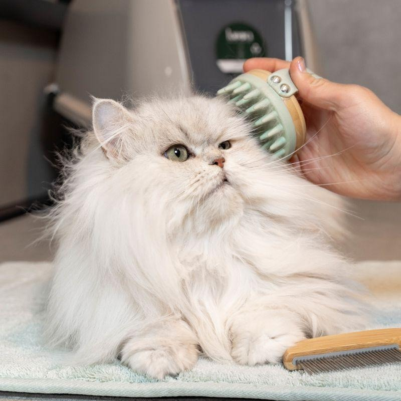
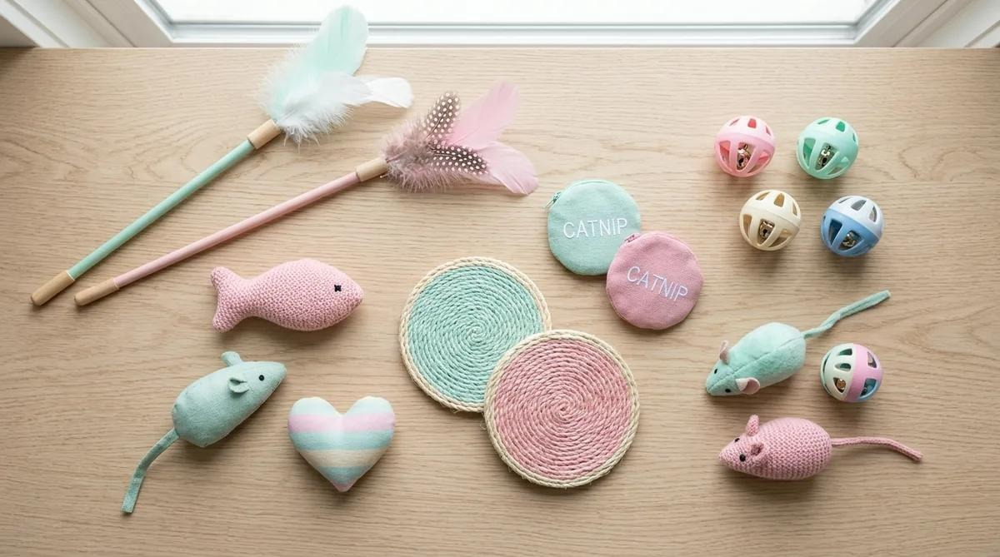

How to care for your Cat
Follow along to learn how to care for your feline friend!
Explore Cat Care

Nutrition

Check ups

Hygiene

Affection
Nutrition
Cats require a balanced and nutritious diet to maaintain good health and energy. As carnivores, cats depend on nutrients found in animal-based foods. The provision of the correct food helps support their muscles,growth,immune system and overall well-being
What should cats eat?
Cats should be fed complete and balanced cat food that provides the nutrients they require. Cat food should suit the age of your cat and specific health needs
A cats diet can consist of:
- Wet cat food
- Dry cat food
- Fresh drinking water
- Occasional treats
How often should cats eat?⏰
Feeding varies depending on your cat's age, health and activity. Kittens usually require several small portions throught a day, while adult cats usually only eat two or more measured meals daily. Following appropriate feeding guidelines helps maintain a healthy routine
Foods to Avoid🚫
Human foods are mostly unsafe for cats as certain foods can be toxic and can cause serious health problems. Cat owners should be careful about what they allow their pets to consume daily
The importance of water💧
Drinking water is very essential for cats. Water helps maintain bodily functions, supports digestion and prevents dehydration. Cats should always have constant access to clean water.
Nutrition Tips for Owners:
- Choose complete and balanced cat food
- Ensure cats have fresh drinking water
- Follow appropriate feeding guidelines
Check ups
Introduction
A cat's health is an important part of its overall well-being. Regular vetinary check-ups help monitor a cat's condition, identify health problems and ensure that it receieves care as needed. As an owner it is essential that you pay attention to your cat's behavior,appetite and activity.
Regular Check-ups
Cats should visit a vetinary clinic regularly to ensure their health is up to date. During check-ups, the vet can examine the cat's eyes,ears,teeth, weight and overall physical condition. These visits also provide an opportunity to discuss any concerns you may have
Vaccinations
Vaccinations can help protect cats against certain infectious diseases. Kittens and Adults Cats may require vaccination based on their age, health or vaccine history.
Signs your cat is unwell
Look out for:
- Loss of appetite
- Unusual fatigue
- Vomitting or Diarrhoea
- Unusual behavioral patterns
Tips for you!
- Schedule check-ups
- Keep vaccinations up to date
- Monitor changes in behavior and appetite
- Provide a clean environment
Hygiene
Introduction to Cat Hygiene
Maintaining a proper hygiene is essential for a cat's comfort and well-being. Regular grooming and cleaning litter boxes create a tidy living environment for your cats and help keep them clean and reduces the risk of certain health issues
Grooming your Cat
Brushing your cat helps remove losse fur, reduces tangles and keep your cat's coat looking healthy. Long haired cats may require more brushing than a short-haired cat. Using a grooming brush can make the experience comfortable for your cats
Cleaning their litter box
A clean litter box is essential for maintaining your cat's hygiene. Litter boxes should be scooped regularly and washed when necessary. The litter area being clean help to create a comfortable environment and encourages healthy litter box habits
Hygiene Tips for Owners
- Brush your cat's fur regularly
- Keep litter boxes clean
- Wash food and water bowls
- Use specified grooming products
- Keep your cat's bedding clean
Affection
Showing Affection
Cats enjoy affection in many ways. Some like being gently petted, while others prefer sitting next to their owners. It is important to respect your cat's personality and boundaries
Spend Quality Time
Buying toys and playing with your cats help build your bond and establishes a healthy feline relationship.
Create a safe and comfortable environment
Creating a safe environment helps cats feel comfortable and secure in their homes and boosts the quality of their life
Tips for Building a strong bond
- Play with your cat regularly
- Respect your cat's boundaries
- Speak to your cat calmly
- Provide a safe and comfortable environment